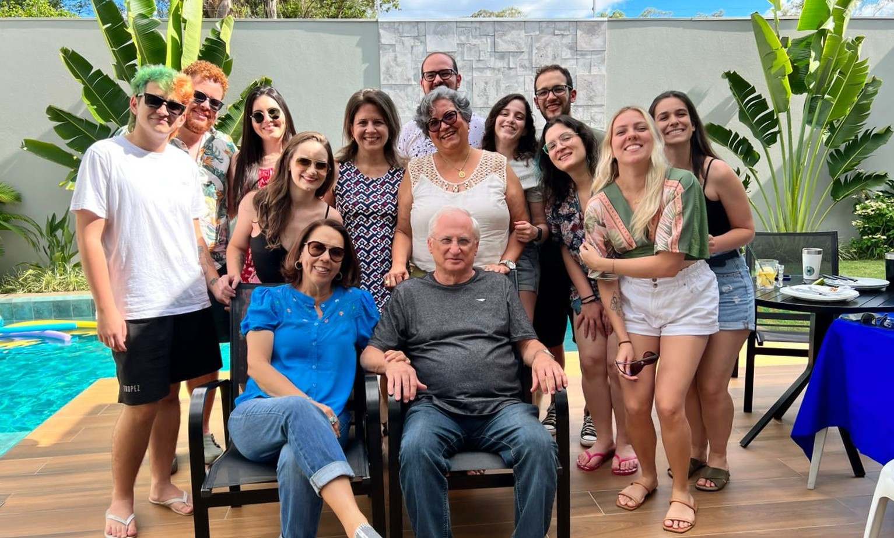

1 O Laboratório
1.1 Apresentação do Laboratório
O Nupgen é o Laboratório de Genética Molecular do Nupélia (Núcleo de Pesquisas em Limnologia, Ictiologia e Aquicultura), na Universidade Estadual de Maringá (UEM), Paraná, Brasil. Coordenado pela Professora Dra. Alessandra Valéria de Oliveira, o Nupgen conta com pesquisadores, alunos de graduação e de pós-graduação que desenvolvem pesquisas objetivando detectar polimorfismos genéticos em populações naturais.

1.2 Linhas de Pesquisa
Atualmente, o Nupgen aborda estudos relacionados a polimorfismo genético sob o escopo de uma ampla variedade de organismos: peixes, parasitas, macrófitas, macroinvertebrados, microorganismos, além de estudos utilizando DNA ambiental. Assim, os pesquisadores e alunos do laboratório conduzem as seguintes linhas de pesquisa:
1.2.1 Taxonomia
Consiste na identificação dos organismos utilizando marcadores moleculares. Projetos nessa linha de pesquisa costumam ocorrer em parceria com outros laboratórios, que contribuem com a identificação morfológica do organismo. A adição da genética molecular facilita a detecção de espécies novas, híbridos e espécies crípticas, por exemplo;
1.2.2 Sistemática filogenética
Diferente da taxonomia, projetos envolvendo Sistemática Filogenética não buscam somente identificar os organismos, mas também levantar hipóteses sobre a relação evolutiva entre eles (entre espécies de um mesmo gênero, por exemplo).
Exemplo de questão: elucidar a relação filogenética em um gênero cuja evolução das espécies seja pouco compreendida (resolução de politomias);
1.2.3 Genética de populações
A Genética de populações busca entender o fluxo gênico em uma população natural, podendo endereçar questões acerca de processos de especiação e adaptação, e podendo observar os efeitos da seleção natural, deriva genética e dos efeitos de gargalo.
Exemplo de questão: diversidade genética em uma população de peixes invasores;
1.2.4 Biogeografia
Biogeografia é uma linha de pesquisa multidisciplinar que busca entender a distribuição de um grupo de organismos em correlação com a evolução ambiental (escala de tempo geológica), gerando resultados importantes para a conservação da biodiversidade.
Exemplo de questão: detectar áreas de endemismo para macrófitas aquáticas.
1.3 Projetos do Nupgen
1.3.1 Peixes
Ictiofaunas de reservatórios aquáticos podem ser formadas por organismos nativos e invasores. O estudo de populações nativas é importante para verificar a presença e interação desses organismos de determinada região. E invasores, quando presentes, modificam o habitat e o sistema onde foram introduzidos, podendo levar a perda de biodiversidade local e alterações genéticas. Assim, estudos moleculares permitem estimar a diversidade e verificar as alterações genéticas que ocorrem nestes animais.
1.3.2 Macrófitas
As macrófitas aquáticas, quando invasoras, constituem uma ameaça em termos ecológicos e também econômicos. A correta identificação e a elucidação da diversidade genética desses organismos podem auxiliar na compreensão dos mecanismos de dispersão e colonização, como também no manejo adequado das espécies.
1.3.3 Parasitos
A relação parasito-hospedeiro possui grande importância nos ambientes naturais. O conhecimento da biodiversidade de parasitos contribui com o levantamento de espécies de hospedeiros no local, além de direcionar métodos de manejo para parasitos com potencial zoonótico.
1.3.4 Microorganismos
Mesmo invisíveis a olho nu, os microorganismos possuem grande importância em ambientes aquáticos, servindo como níveis inferiores na cadeia alimentar. Alguns organismos podem influenciar na qualidade d’água, por isso conhecer a diversidade destes microorganismos é fundamental
1.3.5 Genes opsins
O estudo de proteínas visuais possibilita observar e comparar a influência de fatores ecológicos no processo evolutivo de diversas linhagens, identificando como as espécies se adaptam a diversas pressões seletivas existentes no habitat.
1.3.6 DNA Ambiental
A partir de amostras de água, é possível obter fragmentos de DNA de organismos que estiveram neste ambiente. Peixes, microorganismos, anfíbios, parasitos e muitos outros organismos deixam rastros genéticos e podemos estudá-los indiretamente a partir de técnicas de sequenciamento de nova geração.